Lembrete (24)MobileDU 7.2
Novo canal “Piscar o flash”.

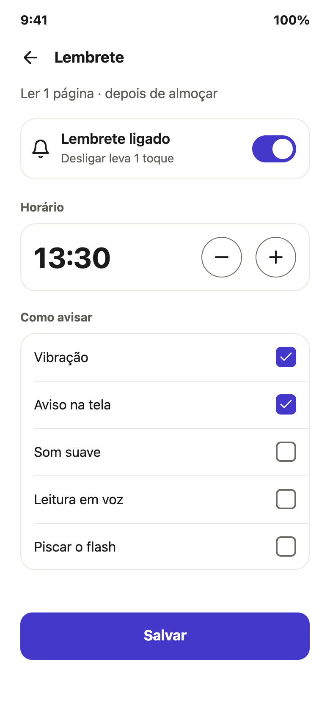
Trabalho do Grupo 18 · 19/11/2026 · Biblioteca MobileDU (Coletto, 2026), skill mobiledu-diretrizes do Intera/UFABC
Método. As 60 diretrizes foram verificadas no próprio protótipo: telas exportadas e especificação das telas, com textos, medidas em px e nomes das camadas. Cada resultado foi conferido contra a tela citada (prompt 2). O relatório anterior, feito só a partir do vídeo, tinha 12 situações que mudaram na conferência (seção 3).
| Categoria | Diretrizes | Atende | Não atende | Não se aplica | Atende depois | Não atende depois |
|---|---|---|---|---|---|---|
| 1. Ambiente | 11 | 3 | 7 | 1 | 10 | 0 |
| 2. Texto | 6 | 2 | 4 | 0 | 5 | 1 |
| 3. Som | 15 | 3 | 4 | 8 | 7 | 0 |
| 4. Vídeo | 7 | 0 | 0 | 7 | 0 | 0 |
| 5. Zoom | 5 | 0 | 2 | 3 | 0 | 2 |
| 6. Entrada de dados | 12 | 3 | 0 | 9 | 3 | 0 |
| 7. Notificações e alertas | 3 | 1 | 2 | 0 | 3 | 0 |
| 8. Gestos | 1 | 1 | 0 | 0 | 1 | 0 |
| Total | 60 | 13 | 19 | 28 | 29 | 3 |
A versão acessível corrige 16 das 19 diretrizes não atendidas. Ficam como proposta, sem desenho: 2.4 cor da fonte, 5.1 e 5.3 zoom no app.
| Prioridade | Diretriz | WCAG / norma | Quem é afetado | Correção |
|---|---|---|---|---|
| Alta | 1.10 Tempo de utilização | WCAG 2.2.1 | Quem lê devagar ou usa leitor de tela perde o “Feito!” e o desfazer de 10 s. | Chave “Avisos sem tempo limite”. |
| Alta | 3.11 e 3.12 Calendário para leitor de tela | WCAG 1.3.1 | Para quem é cego, o progresso vira 28 vezes “Dia praticado”, sem dia nem semana. | Nomear as células e anunciar 4 linhas e 7 colunas. |
| Alta | 2.1, 2.2 e 2.6 Fonte, negrito e espaçamento | WCAG 1.4.12 | Pessoas com dislexia e baixa visão só podiam aumentar o tamanho. | Fonte de leitura fácil, negrito e espaçamento amplo. |
| Média | 1.1 a 1.4 Cores da tela | WCAG 1.4.8 | Sensibilidade à luz e daltonismo dependiam só do alto contraste. | Tema de cores, inverter, reduzir o branco e filtro. |
| Média | 7.2 e 7.3 Redundância sensorial | NBR 17060 1.1.20 | Lembrete sem alerta luminoso para pessoas surdas; conclusão sem som para pessoas cegas. | Canal “Piscar o flash” e “Som ao concluir”. |
| Média | 1.9 Orientação da tela | WCAG 1.3.4 | Quem usa o celular preso a um suporte ou cadeira de rodas fica na horizontal. | Tela Hoje em paisagem. |
| Média | 3.5 e 3.6 Voz e velocidade | — | A leitura em voz do app não se ajustava a cada pessoa. | Item “Voz e velocidade”. |
| Baixa | 1.11 Idioma | WCAG 3.1.1 | Sem opção de idioma. | Item “Idioma” em Ajustes. |
| Baixa | 2.4, 5.1 e 5.3 Cor do texto e zoom | WCAG 1.4.4 | A lupa do sistema e o tamanho do texto cobrem parte. | Proposta registrada, não desenhada. |
| Diretriz | Relatório anterior | Após conferência | Motivo |
|---|---|---|---|
| 1.10 Tempo de utilização | Atende | Não atende | Há limites de tempo: o “Feito!” some em 2 s e o desfazer dura 10 s. |
| 3.4 Leitor de tela | Não atende | Atende | A opção “Ler mensagens em voz” existe em 06/30. |
| 3.5 Leitor de tela – Velocidade da fala | Não se aplica | Não atende | O app tem leitura em voz própria, então velocidade é aplicável. |
| 3.6 Leitor de tela – Timbre da fala | Não se aplica | Não atende | Mesmo motivo de 3.5: a voz é do app. |
| 3.9 Leitor de tela – Falar o texto do item em foco | Não atende | Atende | As camadas do Penpot têm nome por função e estado. |
| 3.11 Leitor de tela – Ler cabeçalhos de tabelas | Não se aplica | Não atende | O calendário de 25 Progresso é uma tabela de 4 × 7. |
| 3.12 Leitor de tela – Número de linhas e colunas | Não se aplica | Não atende | Mesmo motivo de 3.11. |
| 6.6 Aumentar a área clicável em volta de um ícone | Não atende | Atende | A área clicável é a linha inteira (342 × 68), não só o círculo de 40 px; “Novo” tem 96 × 48. |
| 6.7 Destacar o campo em edição | Não atende | Atende | Os campos já têm borda de destaque de 2 px na cor #4338CA. |
| 6.11 Digitação com confirmação de voz | Não atende | Não se aplica | Confirmação de voz ao digitar é do teclado do sistema, como 6.10 e 6.12. |
| 7.1 Ouvir notificações pelo leitor de tela | Não atende | Atende | O lembrete tem o canal “Leitura em voz”. |
| 7.2 Piscar o flash para alertas | Não se aplica | Não atende | O app pode oferecer o flash como canal do lembrete, útil para pessoas surdas. |
| Diretriz | Situação | Evidência | Correção proposta | Depois |
|---|---|---|---|---|
| 1.1 Cor – Personalizar cor da tela | Não atende | 06/30 Acessibilidade só oferece tamanho do texto e alto contraste; não há escolha de cor da tela. | Opção “Tema de cores” (Claro, Creme, Escuro) em 06/30. | Atende |
| 1.2 Cor – Inverter as cores da tela | Não atende | Nenhuma tela tem inversão de cores. | Chave “Inverter cores” em 06/30. | Atende |
| 1.3 Cor – Reduzir o ponto branco | Não atende | Não há controle de intensidade do branco. | Chave “Reduzir o branco” em 06/30. | Atende |
| 1.4 Cor – Filtro da cor da tela | Não atende | Não há filtro de cor. O estado dos hábitos já usa forma + texto, mas a tela não oferece película. | Opção “Filtro para daltonismo” em 06/30. | Atende |
| 1.5 Cor – Intensidade e contraste da cor da tela | Atende | 06/30: chave “Alto contraste”. Texto de apoio #5C5C58 sobre branco ≈ 6,7:1. | — | Atende |
| 1.6 Brilho automático | Não se aplica | Recurso do sistema operacional; o app não usa sensor de luz. | — | Não se aplica |
| 1.7 Animação de telas | Atende | 06/30: “Baixo estímulo · sem animações”. | — | Atende |
| 1.8 Elementos piscantes | Atende | Nenhuma tela tem elemento piscante; o Baixo estímulo desliga as animações. | — | Atende |
| 1.9 Orientação da tela | Não atende | Todas as 33 telas são 390 × 844 em retrato. | Tela 34 “Hoje (paisagem)” em duas colunas, como padrão para as demais. | Atende |
| 1.10 Tempo de utilização | Não atende | 15 Feedback some sozinho em 2 s; 23 Excluir dá só 10 s para desfazer. Não há como prolongar. | Chave “Avisos sem tempo limite” em 06/30 e aviso no texto de 23. | Atende |
| 1.11 Idioma | Não atende | Só português; não há opção de idioma. | Item “Idioma · Português (Brasil)” em 26 Ajustes. | Atende |
| Diretriz | Situação | Evidência | Correção proposta | Depois |
|---|---|---|---|---|
| 2.1 Tipo de fonte | Não atende | Não há escolha de fonte. | Item “Fonte” com opção Leitura fácil em 06/30. | Atende |
| 2.2 Negrito | Não atende | Não há opção de negrito para todo o texto. | Chave “Texto em negrito” em 06/30. | Atende |
| 2.3 Tamanho de fonte | Atende | 06/30: Normal, Grande, Maior; “O texto cresce até 200% sem cortar nada”. | — | Atende |
| 2.4 Cor da fonte | Não atende | A cor do texto só muda com o alto contraste. | Escolher a cor do texto dentro de “Tema de cores” (proposta, não desenhada). | Não atende |
| 2.5 Contraste da fonte | Atende | 06/30 “Alto contraste”; todo texto ≥ 4,5:1 (requisito RNF08). | — | Atende |
| 2.6 Espaçamento da fonte | Não atende | Não há ajuste de entrelinha nem de espaçamento. | Item “Espaçamento do texto” (Normal, Amplo) em 06/30. | Atende |
| Diretriz | Situação | Evidência | Correção proposta | Depois |
|---|---|---|---|---|
| 3.1 Silenciar todos os efeitos sonoros | Atende | O app não toca som por padrão; 24 Lembrete: “Som suave” vem desmarcado. | — | Atende |
| 3.2 Mecanismo de controle de áudio | Não se aplica | O app não reproduz áudio contínuo. | — | Não se aplica |
| 3.3 Áudio de fundo | Não se aplica | Não há áudio de fundo. | — | Não se aplica |
| 3.4 Leitor de tela | Atende | 06/30: “Ler mensagens em voz”; as camadas têm nome para o leitor do sistema. | — | Atende |
| 3.5 Leitor de tela – Velocidade da fala | Não atende | A leitura em voz do próprio app não tem controle de velocidade. | Item “Voz e velocidade” em 06/30. | Atende |
| 3.6 Leitor de tela – Timbre da fala | Não atende | A leitura em voz do app não permite escolher a voz. | Item “Voz e velocidade” em 06/30. | Atende |
| 3.7 Leitor de tela – Leitura de todo o conteúdo | Não se aplica | Recurso do leitor de tela do sistema. | — | Não se aplica |
| 3.8 Leitor de tela – Como falar a pontuação | Não se aplica | Recurso do leitor de tela do sistema. | — | Não se aplica |
| 3.9 Leitor de tela – Falar o texto do item em foco | Atende | Camadas nomeadas por função e estado: “Hábito: Ler 1 página (feito)”, “Aba: Hoje (atual)”, “Botão: Novo”. | Melhoria: rótulo visível nos campos de 03 e 07. | Atende |
| 3.10 Leitor de tela – Letras e palavras em maiúsculo | Não se aplica | Recurso do leitor de tela do sistema. | — | Não se aplica |
| 3.11 Leitor de tela – Ler cabeçalhos de tabelas | Não atende | 25 Progresso: o calendário de 4 semanas é uma tabela, mas as células se chamam só “Dia praticado”, sem dia nem semana. | Nomear cada célula (“Segunda, semana 1: praticado”) e descrever a leitura na tela 35. | Atende |
| 3.12 Leitor de tela – Número de linhas e colunas | Não atende | O calendário não informa que tem 4 linhas e 7 colunas. | Anúncio “Últimas 4 semanas, tabela, 4 linhas e 7 colunas” (tela 35). | Atende |
| 3.13 Leitor de tela – Indicar emojis | Não se aplica | O app não usa emojis. | — | Não se aplica |
| 3.14 Modo de leitura ao digitar | Não se aplica | Recurso do teclado e do leitor do sistema. | — | Não se aplica |
| 3.15 Falar a palavra inteira ao digitar | Não se aplica | Recurso do teclado e do leitor do sistema. | — | Não se aplica |
| Diretriz | Situação | Evidência | Correção proposta | Depois |
|---|---|---|---|---|
| 4.1 Legenda – Ativar ou desativar | Não se aplica | O app não tem vídeos. | — | Não se aplica |
| 4.2 Legenda – Fonte e estilo preferidos | Não se aplica | O app não tem vídeos. | — | Não se aplica |
| 4.3 Legenda – Tamanho da fonte | Não se aplica | O app não tem vídeos. | — | Não se aplica |
| 4.4 Legenda – Cor e opacidade da fonte | Não se aplica | O app não tem vídeos. | — | Não se aplica |
| 4.5 Legenda – Cor de fundo e opacidade da caixa | Não se aplica | O app não tem vídeos. | — | Não se aplica |
| 4.6 Ativar a janela de Libras nos vídeos | Não se aplica | O app não tem vídeos. | — | Não se aplica |
| 4.7 Audiodescrição | Não se aplica | O app não tem vídeos. | — | Não se aplica |
| Diretriz | Situação | Evidência | Correção proposta | Depois |
|---|---|---|---|---|
| 5.1 Ativar o zoom | Não atende | Não há ampliação dentro do app; só o tamanho do texto. | Permitir ampliar com dois dedos nas telas (proposta, não desenhada). | Não atende |
| 5.2 Seguir o foco de seleção | Não se aplica | Recurso da lupa do sistema. | — | Não se aplica |
| 5.3 Exibir controle do zoom na tela | Não atende | Não há controle de zoom. | Botão de lupa opcional (proposta, não desenhada). | Não atende |
| 5.4 Visibilidade do controle do zoom | Não se aplica | Não existe controle de zoom próprio. | — | Não se aplica |
| 5.5 Janela de ampliação e ampliação máxima | Não se aplica | Recurso da lupa do sistema. | — | Não se aplica |
| Diretriz | Situação | Evidência | Correção proposta | Depois |
|---|---|---|---|---|
| 6.1 Modelo do cursor | Não se aplica | App de toque, sem cursor de ponteiro. | — | Não se aplica |
| 6.2 Visualização do cursor | Não se aplica | App de toque, sem cursor de ponteiro. | — | Não se aplica |
| 6.3 Ação de cada tipo de toque | Atende | Tudo funciona com toque simples; nada exige arrastar, toque duplo ou longo. | — | Atende |
| 6.4 Intervalo de tempo de um toque | Não se aplica | Configuração do sistema. | — | Não se aplica |
| 6.5 Duração de um toque longo | Não se aplica | O app não usa toque longo. | — | Não se aplica |
| 6.6 Aumentar a área clicável em volta de um ícone | Atende | Áreas medidas: linha do hábito 342 × 68, “+ 1 copo” 84 × 44, “Novo” 96 × 48, Voltar 48 × 48, abas 90 × 64, teclas do PIN 72 × 72. | — | Atende |
| 6.7 Destacar o campo em edição | Atende | 03 e 07: campo em edição com borda de 2 px #4338CA (≈ 9:1 sobre branco). | Melhoria: borda de 3 px, cursor visível e rótulo acima do campo. | Atende |
| 6.8 Preenchimento automático por tipo de campo | Não se aplica | O app só pede um apelido; não há nome, e-mail ou telefone. | — | Não se aplica |
| 6.9 Campo obrigatório com cor diferente | Não se aplica | Um campo por tela; nenhum obrigatório marcado por cor. | — | Não se aplica |
| 6.10 Digitação por toque direto | Não se aplica | Recurso do teclado do sistema. | — | Não se aplica |
| 6.11 Digitação com confirmação de voz | Não se aplica | Recurso do teclado e do leitor do sistema. | — | Não se aplica |
| 6.12 Digitação datilográfica | Não se aplica | Recurso do teclado do sistema. | — | Não se aplica |
| Diretriz | Situação | Evidência | Correção proposta | Depois |
|---|---|---|---|---|
| 7.1 Ouvir notificações pelo leitor de tela | Atende | 24 Lembrete: canal “Leitura em voz”. | — | Atende |
| 7.2 Piscar o flash para alertas | Não atende | 24 Lembrete oferece vibração, aviso, som e voz, mas nenhum alerta luminoso. | Canal “Piscar o flash” em 24. | Atende |
| 7.3 Feedback sonoro sobre ações | Não atende | Concluir um hábito dá retorno visual e vibração opcional, sem som. | Chave “Som ao concluir” em 06/30. | Atende |
| Diretriz | Situação | Evidência | Correção proposta | Depois |
|---|---|---|---|---|
| 8.1 Controle do app por gestos configuráveis | Atende | Nenhuma tarefa exige gesto ou movimento do aparelho; Voltar é sempre um botão visível. | — | Atende |
Painel ampliado em quatro grupos: Texto, Cores, Movimento e tempo, Som e vibração. A tela agora rola; à direita, a tela dividida em duas partes.
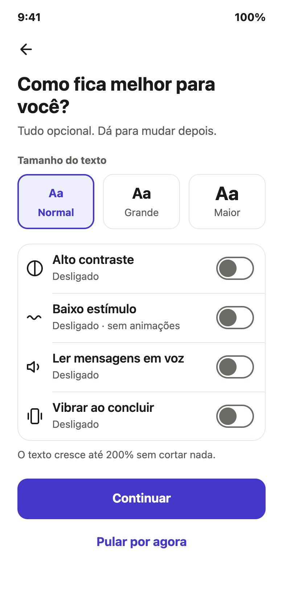
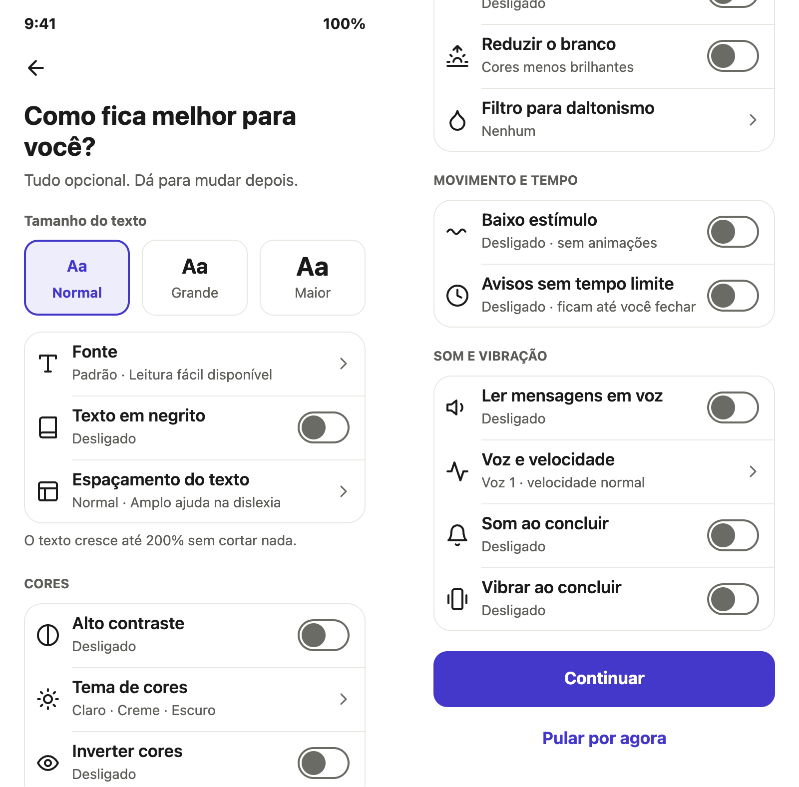
Rótulo “Apelido” visível, borda de 3 px e cursor no campo em edição.
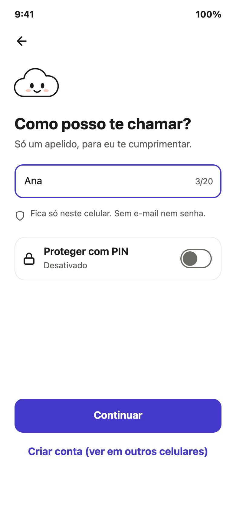
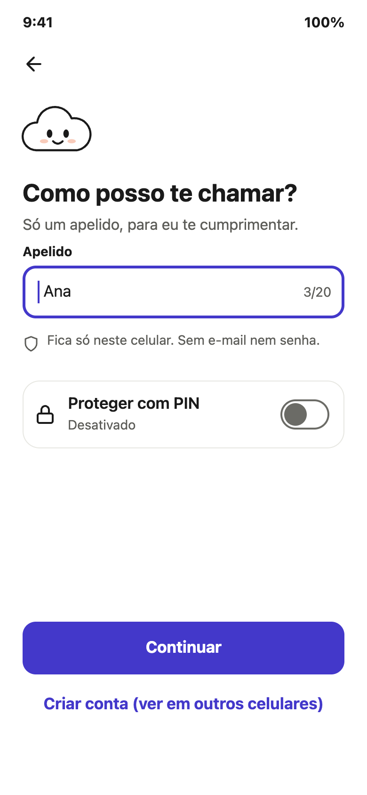
Rótulo “Nome do hábito”, borda de 3 px e cursor.
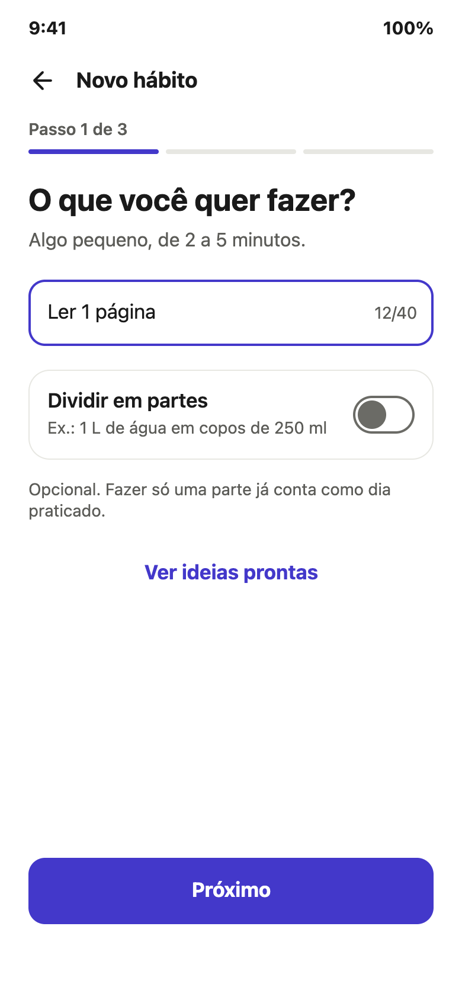
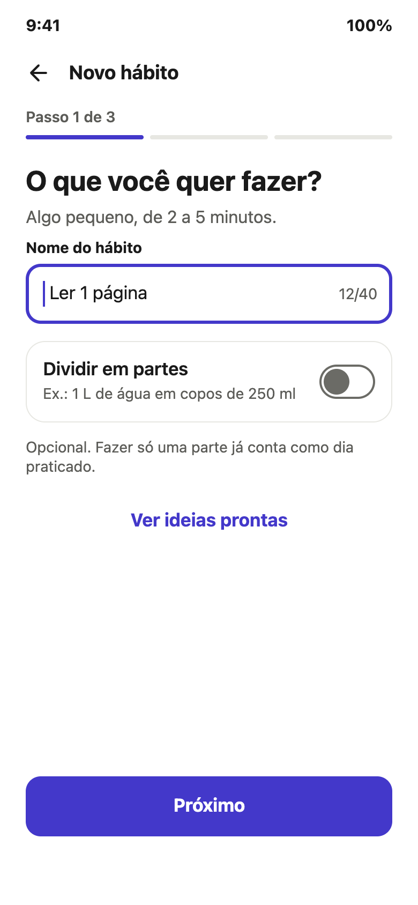
Novo item “Idioma”.
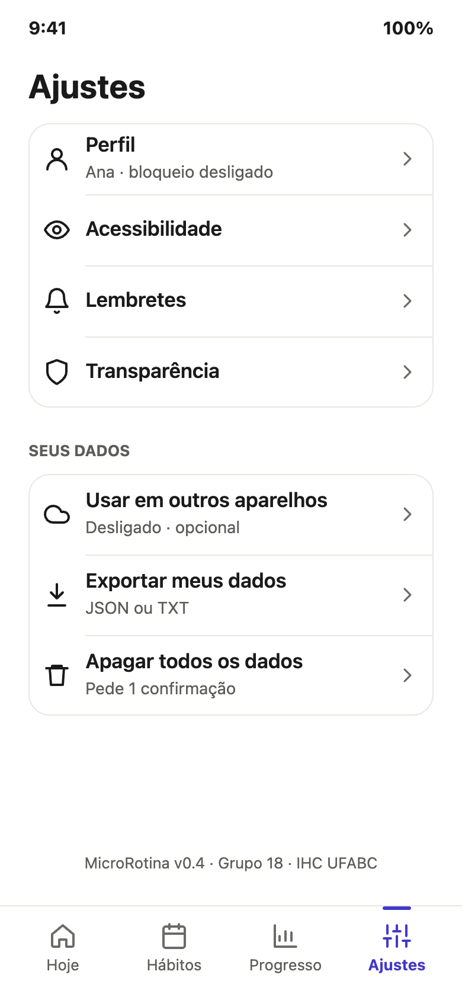
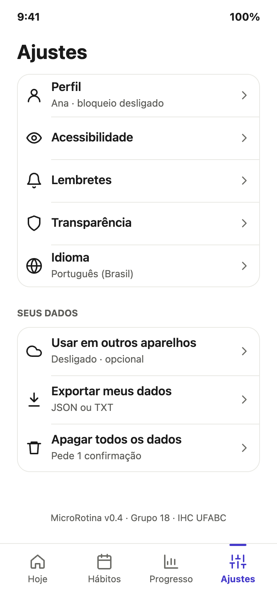
Novo canal “Piscar o flash”.

O texto avisa que dá para tirar o limite de 10 s.

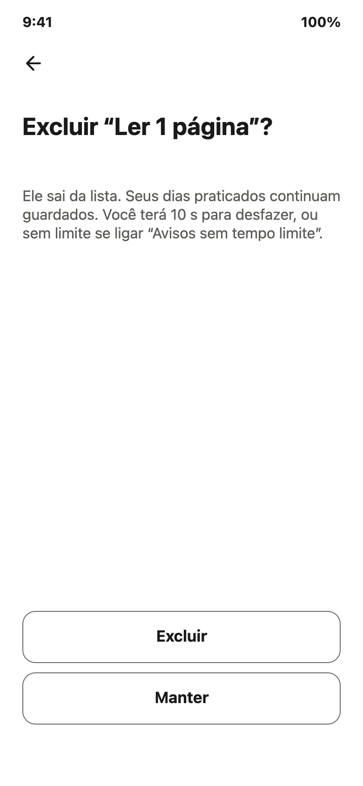
Mesmo conteúdo em duas colunas para o celular deitado.
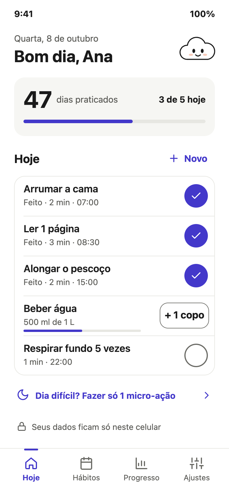
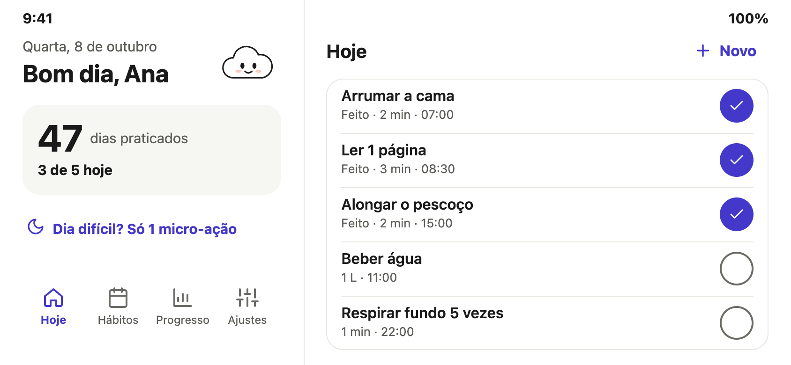
Células do calendário com dia, semana e estado; a tela 35 mostra o que o leitor fala. A aparência de 25 não muda.
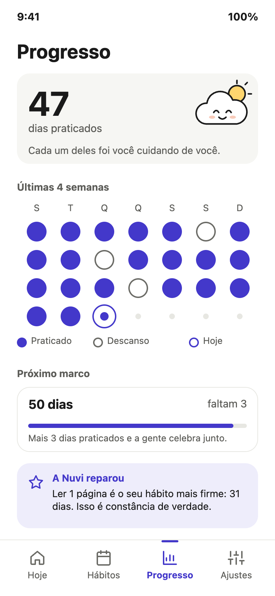
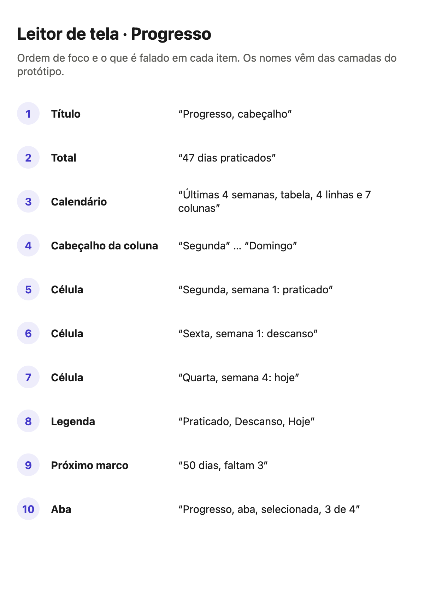
O pedido do enunciado foi refinado em três etapas: auditar, conferir e gerar a versão acessível.
Usando a skill MobileDU (Coletto, 2026), audite o protótipo MicroRotina diretriz por diretriz. Material: as telas exportadas do protótipo (numeradas de 01 a 33, com o nome de cada uma) e a especificação das telas, com textos, tamanhos em px e os destinos de cada toque. Considere só o que aparece nesse material. Para cada uma das 60 diretrizes, nas 8 categorias (Ambiente, Texto, Som, Vídeo, Zoom, Entrada de dados, Notificações e alertas, Gestos), informe: 1. Diretriz: número e nome. 2. Situação: Atende, Não atende ou Não se aplica. 3. Evidência: número e nome da tela e o elemento exato (texto, controle, medida). Sem evidência na tela, não marque Atende. 4. Correção proposta: o que mudar e em qual tela. Use "—" quando atende. Regras de decisão: - Antes de marcar Não atende, procure a opção em todas as telas, inclusive Ajustes, Acessibilidade e Lembrete. - Use Não se aplica só quando o app não tem aquele tipo de conteúdo (vídeo, tabela, áudio contínuo) ou quando o recurso é exclusivo do sistema operacional. Diga qual dos dois casos é. - Meça alvos de toque pela área clicável do grupo, não pelo ícone desenhado. O mínimo é 44 × 44 px. - Cite o critério WCAG 2.2 relacionado quando houver. Entregue: - uma tabela por categoria; - um resumo com totais por situação e por categoria; - as 5 lacunas mais importantes, em ordem de prioridade (alta, média, baixa), com o motivo: quem é afetado e quão grave é.
Confira cada linha da auditoria contra as telas e a especificação. A IA pode errar. Para cada diretriz: - abra a tela citada como evidência e confirme que o elemento existe e tem a medida informada; - quando a conclusão mudar, registre o que estava errado e a situação corrigida. No fim, liste as diretrizes cuja situação mudou, com o motivo de cada mudança.
Com base na auditoria conferida, gere a versão acessível do protótipo MicroRotina, corrigindo as lacunas de prioridade alta e média. Regras: - mantenha o estilo visual (cor de destaque #4338CA, fonte, Nuvi), a linguagem acolhedora e os fluxos existentes; - cada mudança precisa citar a diretriz MobileDU que a justifica; - não remova funções nem textos que já atendem a outras diretrizes. Entregue: - as telas alteradas; - uma lista "antes → depois" com a tela, o que mudou e a diretriz que justifica.